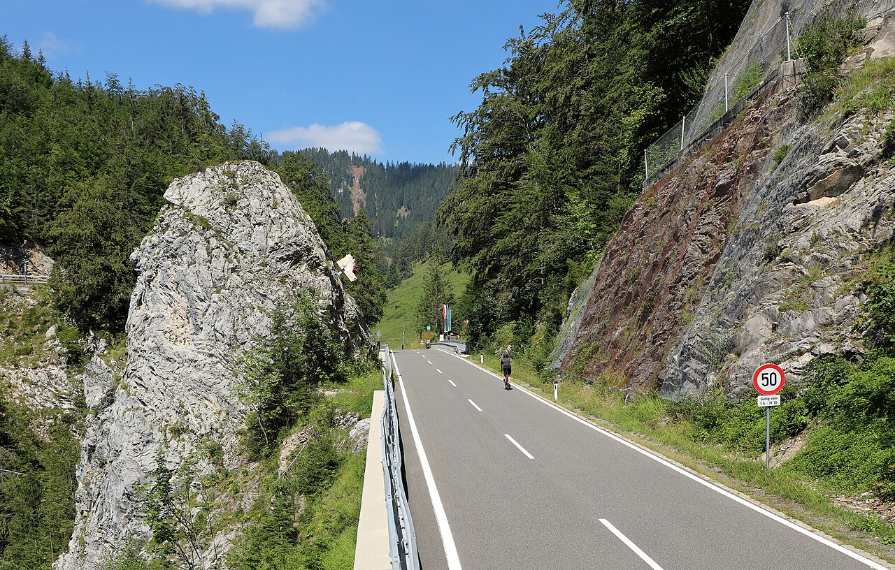

3. Hengst-hágó (Hengstpaß)
47.70183938964735, 14.460694831334223

A Hengstpaß elsőre csak egy átjárónak tűnik Altenmarkt és Windischgarsten között: kanyarok, erdő, legelő, szurdok. De valójában ez egy határvonal tájak és ritmusok között. Itt érzed meg, hogy az Alpok nem háttér, hanem szerkezet: a kőzet és a víz kijelöli, hol lehet menni, hol lehet élni.
1. Amit mindenki lát: szép erdők és hegyi rétek. Amit kevesen tudnak: ez egy természet által „engedélyezett” folyosó
A Hengstpaß útvonala nem véletlenül ilyen. A szűk völgyek és szurdokok kényszerpályák: a víz és a fagy apránként ugyanazokat a gyenge zónákat dolgozta ki, az ember pedig ehhez igazította az átjárót. A kanyarok így valójában geológiai térképvonalak.
2. A név ironikus: „Hengst” mint csődör, de a hely inkább fegyelmezett, mint vad
A név nyers erőt sugall, miközben a táj itt inkább szigorúan tagolt és zárt. A sűrű fenyvesek, a hirtelen beszűkülő szakaszok és a meredek oldalak nem „szelíd” alpesi képeslapot adnak, hanem egy olyan hegyvilágot, ahol a mozgás mindig feltételekhez kötött.
3. Az alpesi legelő itt nem romantika, hanem gazdasági tér
A nyitott rétek sok fotón idillként jelennek meg, de valójában munkaterületek: rövid szezon, gyors időjárásváltások, és évszázados alkalmazkodás. A legelő és az erdő határa nem esztétikai, hanem praktikus döntések eredménye, és ettől lesz a táj „valós”, nem díszletszerű.
4. A szurdokok pszichológiája: miért hat ez az út „sűrűbbnek”, mint egy nagy hágó
A Hengstpaß nem panoráma-hágó. Itt sokszor nem messzire nézel, hanem befelé haladsz: falak közé szorított völgyek, erdővel fedett lejtők, gyorsan váltó fények. Ez a térélmény olyan, mintha a hegy „összezárna” körülötted: ettől lesz emlékezetes, és ettől érzed, hogy ez az átjáró nem látványból, hanem anyagból épül.
5. Szemléletváltó zárás
A Hengstpaß különlegessége nem a magassága, hanem a karaktere. Nem a képeken él, hanem a szabályaiban: hol szűkül be a tér, hol nyílik ki egy legelő, hol vált erdőre a táj. Ha így nézed, ez nem egy „kitérő” a fő völgyekről, hanem egy sűrített alpesi lecke arról, hogyan formálja a hegy a közlekedést és a mindennapokat.